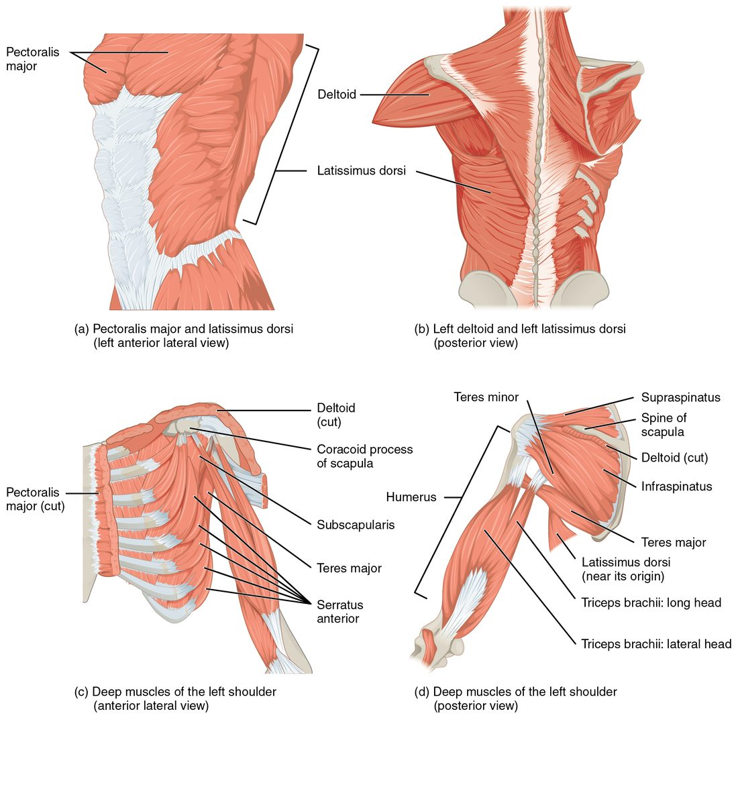

Muscles of the shoulder and upper limb
1Why this matters
Mr. Brooks, 58, has painted ceilings for 30 years. Lately his shoulder aches at night, and lifting his arm out to the side to reach a high shelf hurts and feels weak. An MRI shows a torn tendon lying in the narrow space between the head of his humerus and the acromion. It belongs to one of the four small muscles that hold his shoulder joint together.
2What this builds on
3Quick check before you start
1. Where is the greater tubercle?
- On the lateral side of the top of the humerus
- On the medial epicondyle at the elbow
- On the spine of the scapula
Show the answer
The greater tubercle is the large bump on the lateral side of the top of the humerus, beside the head. The lesser tubercle is smaller and faces forward; the intertubercular groove runs between them.
- Correct: On the lateral side of the top of the humerus:
- On the medial epicondyle at the elbow:
- On the spine of the scapula:
2. The glenoid cavity of the scapula is best described as:
- A deep socket that surrounds most of the humerus's head
- A shallow socket much smaller than the humerus's head
- A groove for a tendon
Show the answer
The glenoid cavity is a shallow socket, far smaller than the head of the humerus. That gives the shoulder its huge range but little bony stability.
- A deep socket that surrounds most of the humerus's head:
- Correct: A shallow socket much smaller than the humerus's head:
- A groove for a tendon:
3. When the elbow flexors contract to bend the elbow, the muscle on the back of the arm is the:
- Synergist
- Fixator
- Antagonist
Show the answer
The muscle that produces the opposite movement, here extension, is the antagonist. It relaxes and lengthens, often braking the movement.
- Synergist:
- Fixator:
- Correct: Antagonist:
4Anatomy

With labels hidden, select a box to reveal its label.
5How it works, step by step
- Trunk muscles (trapezius, serratus anterior) rotate the scapula.The glenoid cavity turns upward, giving the humerus a base to rise from.
- The rotator cuff muscles contract around the shoulder joint.They hold the head of the humerus pressed into the shallow glenoid cavity.
- With the head held in place, the deltoid pulls on the deltoid tuberosity from above the joint.The humerus swings out to the side (abduction) instead of sliding up out of the socket.
- The triceps brachii pulls on the olecranon.The elbow straightens, carrying the hand toward the target.
- Forearm flexors send long tendons through the carpal tunnel into the fingers.The fingers curl and grip.
6Core concepts
7A common mistake
The wrong idea: The rotator cuff is one muscle that rotates the arm.
What actually happens: The rotator cuff is four muscles (supraspinatus, infraspinatus, teres minor and subscapularis) whose tendons blend with the shoulder joint capsule. Their main job is holding the head of the humerus in the shallow glenoid cavity while the bigger muscles move the arm. They do rotate the arm too, but in opposite directions: the infraspinatus and teres minor laterally, the subscapularis medially.
8Check yourself
Anything you miss goes into your review queue.
1. Name the pinned broad muscle of the lower back.
- Latissimus dorsi
- Trapezius
- Teres major
- Erector spinae group
Show the answer
The latissimus dorsi (widest of the back) runs from the lower spine, sacrum, iliac crest and lowest ribs to the intertubercular groove of the humerus.
- Correct: Latissimus dorsi: Correct. The widest muscle of the back is the latissimus dorsi.
- Trapezius: The trapezius covers the upper back and neck, above this muscle.
- Teres major: The teres major is a much smaller muscle running from the inferior angle of the scapula to the humerus.
- Erector spinae group: The erector spinae lies deeper, in columns right beside the spine.
2. In this back view of the deep shoulder muscles, name the pinned rotator cuff muscle below the spine of the scapula.
- Supraspinatus
- Teres major
- Infraspinatus
- Subscapularis
Show the answer
The infraspinatus fills the infraspinous fossa, below the spine of the scapula, and inserts on the greater tubercle. It rotates the arm laterally.
- Supraspinatus: The supraspinatus lies above the spine of the scapula, in the supraspinous fossa.
- Teres major: The teres major runs from the inferior angle of the scapula; it is not part of the rotator cuff.
- Correct: Infraspinatus: Correct. Below the spine is the infraspinatus.
- Subscapularis: The subscapularis lies on the rib-side face of the scapula and cannot be seen from behind.
3. Mr. Brooks, 58, has painted ceilings for 30 years. He now has pain at the top of his shoulder and weakness when he raises his arm out to the side. An MRI shows a torn tendon passing between the head of the humerus and the acromion. Which muscle's tendon is most likely torn?
- Subscapularis
- Biceps brachii, short head
- Teres major
- Supraspinatus
Show the answer
The supraspinatus tendon runs over the top of the shoulder joint, under the acromion, to the greater tubercle. Age-related wear, added to by years of overhead work, makes it the cuff tendon that tears most often. It helps abduct the arm, so a tear makes raising the arm to the side weak and painful.
- Subscapularis: The subscapularis runs across the front of the joint to the lesser tubercle, not under the acromion.
- Biceps brachii, short head: The short head of the biceps brachii starts on the coracoid process at the front and does not pass between the humerus and the acromion.
- Teres major: The teres major runs from the inferior angle of the scapula to the front of the humerus, well below the acromion.
- Correct: Supraspinatus: Correct. The supraspinatus is the cuff tendon that tears most often.
4. Which muscles belong to the rotator cuff? Select all that apply.
- Supraspinatus
- Infraspinatus
- Teres major
- Teres minor
- Subscapularis
- Deltoid
Show the answer
The rotator cuff is SITS: supraspinatus, infraspinatus, teres minor and subscapularis. Their tendons wrap the shoulder joint and hold the head of the humerus in the glenoid cavity.
- Correct: Supraspinatus: Yes. The S of SITS; it passes over the top of the joint.
- Correct: Infraspinatus: Yes. The I of SITS; it lies below the spine of the scapula.
- Teres major: No. The teres major moves the humerus with the latissimus dorsi, but it does not join the cuff around the joint capsule.
- Correct: Teres minor: Yes. The T of SITS; it lies along the lateral border of the scapula.
- Correct: Subscapularis: Yes. The final S of SITS, on the front of the scapula.
- Deltoid: No. The deltoid lies over the cuff and abducts the arm, but it is not part of the cuff.
5. Which muscle is the prime mover for abducting the arm, raising it out to the side?
- Pectoralis major
- Latissimus dorsi
- Deltoid
- Teres major
Show the answer
The deltoid runs from the clavicle, acromion and spine of the scapula over the top of the shoulder to the deltoid tuberosity. Pulling from above the joint, it lifts the arm out to the side.
- Pectoralis major: The pectoralis major flexes and adducts the arm, bringing it forward and across the chest.
- Latissimus dorsi: The latissimus dorsi extends and adducts the arm, pulling it down and back.
- Correct: Deltoid: Correct. The deltoid is the prime mover of abduction.
- Teres major: The teres major adducts and extends the arm with the latissimus dorsi.
6. Common origins in the forearm: wrist and finger extensors → lateral epicondyle of the humerus; wrist and finger flexors → ____.
- Olecranon
- Medial epicondyle
- Coracoid process
- Deltoid tuberosity
Show the answer
Most flexors on the palm side of the forearm start from a common tendon on the medial epicondyle, and most extensors on the back from a common tendon on the lateral epicondyle.
- Olecranon: The olecranon is where the triceps brachii inserts, not where forearm flexors start.
- Correct: Medial epicondyle: Correct. The flexors share an origin on the medial epicondyle.
- Coracoid process: The coracoid process anchors the short head of the biceps brachii, the pectoralis minor and the coracobrachialis.
- Deltoid tuberosity: The deltoid tuberosity is where the deltoid inserts.
7. With your elbow bent, you turn a stiff screw clockwise with your right hand, rolling the palm from facing down to facing up. Which muscles power this?
- Pronator teres and pronator quadratus
- Brachioradialis and flexor carpi ulnaris
- Triceps brachii and extensor digitorum
- Supinator and biceps brachii
Show the answer
Turning the palm up is supination. The supinator wraps the upper radius and rolls it, and the biceps brachii, pulling on the radial tuberosity, is the strongest supinator when the elbow is bent.
- Pronator teres and pronator quadratus: The pronators turn the palm down, the opposite movement.
- Brachioradialis and flexor carpi ulnaris: The brachioradialis mainly flexes the elbow and the flexor carpi ulnaris flexes the wrist; neither is a main supinator.
- Triceps brachii and extensor digitorum: The triceps brachii extends the elbow and the extensor digitorum extends the fingers; neither turns the palm up.
- Correct: Supinator and biceps brachii: Correct. Supination by the supinator and biceps brachii.
9Summary
The trapezius, rhomboids, serratus anterior and pectoralis minor position the scapula. The pectoralis major flexes the arm, the latissimus dorsi extends it, and the deltoid abducts it. The rotator cuff (supraspinatus, infraspinatus, teres minor, subscapularis) holds the humerus in its socket. The biceps brachii, brachialis and brachioradialis flex the elbow and the triceps brachii extends it; the pronators turn the palm down and the supinator and biceps brachii turn it up. Wrist and finger flexors start on the medial epicondyle, extensors on the lateral epicondyle. Extrinsic hand muscles give grip strength, and intrinsic ones, including the thenar and hypothenar eminences, make fine movements.